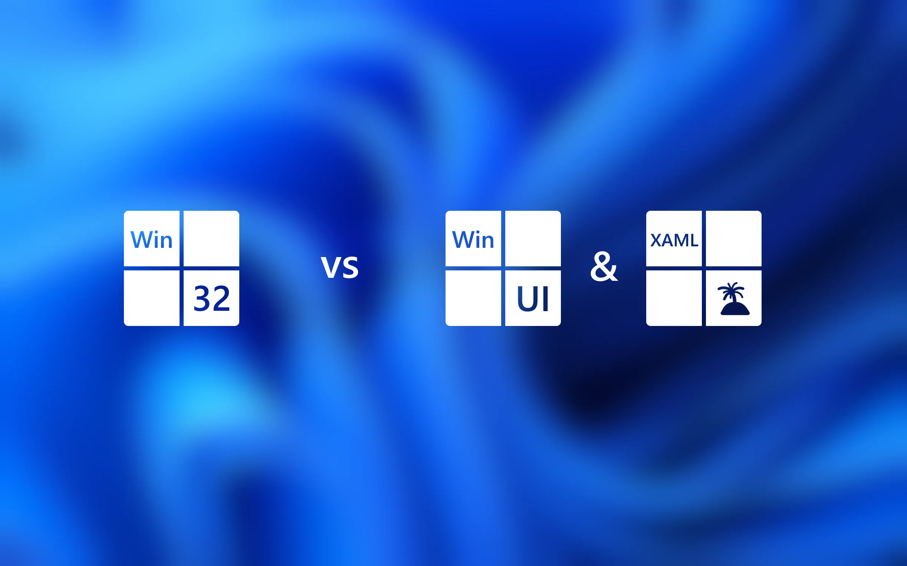

22 julho, 2025 · Microsoft News
Accenture impulsiona uso responsável da IA com Azure AI Foundry, reduzindo em até 50% o tempo de lançamento de soluções
A Accenture avança em IA generativa com foco em governanca, seguranca e ganho operacional usando Azure AI Foundry.